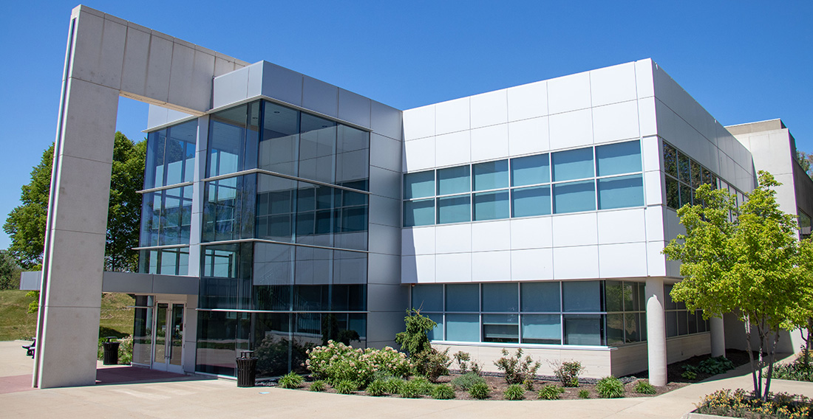
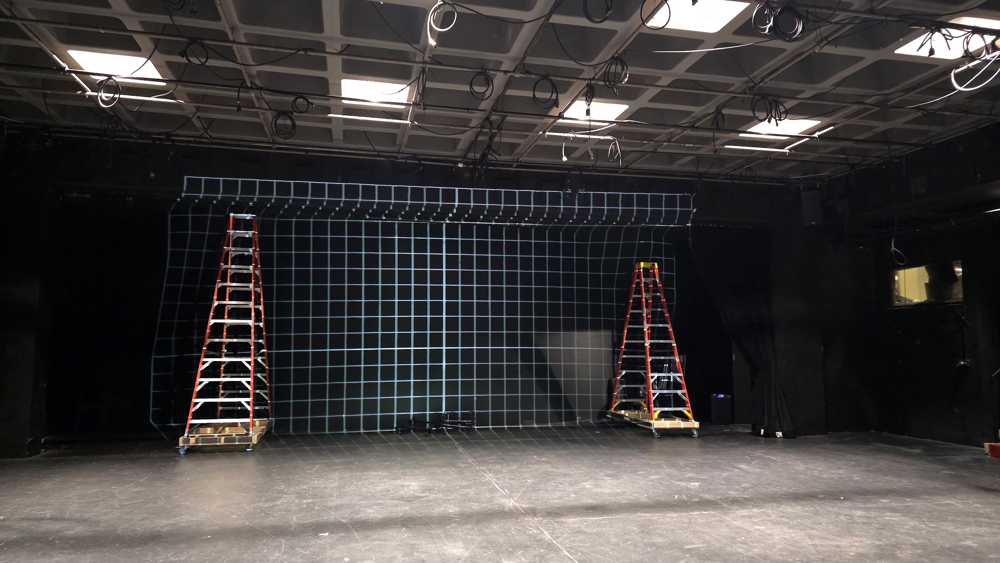

Virtual Tour
Explore the performance and rehearsal spaces used by Simpson Productions. More locations and photos will be added soon!
513 N D St, Indianola, IA 50125


Blank Performing Arts Center (BPAC)
The home of Simpson Productions. BPAC houses Pote Theatre, Barnum Studio Theatre, rehearsal rooms, costume and scene shops, and faculty offices.

Pote Theatre
The main performance space for Simpson Productions, featuring full lighting, sound, and seating for audiences. Pote hosts musicals, plays, operas, and large-scale productions throughout the year.

Barnum Studio Theatre
A flexible black box space used for intimate productions, rehearsals, student-directed work, and experimental theatre.